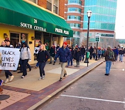

|
Friends,
Last night, about two hours after the announcement of the Missouri grand jury's determination that Officer Darren Wilson would not be indicted, I received a text from our staff on the ground in Ferguson.
They believed police were shooting live rounds into groups of protestors and using tear gas. Nonviolent protestors who could were taking shelter in safe houses and sanctuaries. Others endured violence as they attempted to hold the line and maintain presence.
For the past 109 days, activists working with the Fellowship of Reconciliation and the Don't Shoot Coalition have shown incredible restraint.
Law enforcement's preparation for the grand jury announcement included the stockpiling and mobilizing of military grade weaponry and vehicles, adding more to an already hypermilitarized community.
This preparation and last night's response indicated stubborn refusal to support the Rules of Engagement (PDF) proposed by the Don't Shoot Coalition, of which FOR is a part.
The rules were proposed on November 5 and, though they represented a clear path to de-escalate violence and work toward a new day in St. Louis, no full agreement was forthcoming in spite of much negotiation and a willingness to dialogue led by young activists of color in St. Louis.
The proposed rules begin with "The preservation of human life shall be the first priority."
In the reported shooting of live rounds, in timing the announcement at night instead of in the morning, and in their preparation for this moment, the system is communicating that the preservation of Black and Brown lives is not a priority. It isn't a priority now, and it wasn't on August 9 when Michael Brown was shot, and that's the point: our system of justice needs to value all lives.
The dominant cry of protestors for the last 108 days has not been "Indict Darren Wilson!" It has been "Black Lives Matter!"
The hope that there would be an indictment was a hope that our brokenness would be acknowledged and we would begin a process of truth telling, ultimately leading to reconciliation. But the system has only affirmed what so many know to be true: From Dred Scott to Mike Brown the system has failed and is failing to protect and support freedom, justice and life for Black and Brown persons.
Just as Mike Brown's death has become a symbol of the injustice and dehumanization that Black and Brown persons experience every day, Darren Wilson has become a symbol of a system that perpetuates a collective unconsciousness about our legacy of racism in this country.
It is a system that protects property rather than persons, and criminalizes poverty instead of realizing that the existence of poverty in a resource rich country like the United States is itself a crime.
But this morning we are still marching.
Our team in Ferguson is already on the streets reaffirming, "Black Lives Matter!" We are speaking our collective wisdom (PDF) that we seek repentance, redemption, and reconciliation for all. From Spokane to Columbia, Missouri, from Oakland to New York City, citizens last night and today are declaring nationwide that we will keep struggling for justice and healing.
What we know to be true is that in systems of dehumanization and injustice, the image of the divine in each of us is distorted and diminished.
In seeking justice for all, we re-affirm the principles of nonviolence that ground us in these truths: no one is reducible to the evil they commit; nonviolence is on the side of love, not hate; healing requires creativity; and the universe is on the side of justice.
Thank you for your faith, your solidarity and your #DeepAbidingLove.
FOR peace with justice,
 Rev. Kristin Stoneking Rev. Kristin Stoneking
Executive Director
Fellowship of Reconciliation
Images, from top: "Hands Up, Don't Shoot" in Ferguson last night (Anthony Grimes), "Black Lives Matter" march to the federal courthouse in St. Louis this morning (Gretchen Honnold), "Where do you stand?" last night in Ferguson (Anthony Grimes), continuation of the "Black Lives Matter" march through St. Louis today (Gretchen Honnold). Pictures used with permission. |